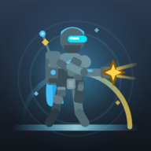

4SL4N Studio
Tek kahraman, sonsuz dalga.
Ekran kapalıyken de altın kazanır.
sürüm 1.0.2 · 78,1 MB · Android 7.0 ve üzeri
Kahraman solda sabit durur ve kendi ateş eder; düşmanlar sağdan dalga dalga gelir. Sen yalnızca nereye yatırım yapacağına karar verirsin.
Her seviye 20 dalga; son dalgada boss gelir. Boss düşünce yükseltmeler sıfırlanır, altın kalır ve düşmanlar ölçeklenir — her seviye temiz bir yarış gibi başlar.
Bölünerek çoğalan, havadan süzülen, arkadan asit atan, zırh kuşanan… Her kademenin silueti ve davranışı ayrı okunur.
Yirmi kademe kendi yeteneğini taşır: zırh, kabuk dokunulmazlığı, diken yansıması, altın hırsızlığı, iyileştirme alanı, silahını kilitleyen deşarj… Neye karşı ne yapacağını zamanla öğrenirsin.
Canı yarıya inen boss öfkelenir ve kesilebilir bir şarj kurar: yerde uzayan telegraf şeridi, can barının üstünde senin hasarınla dolan bir gösterge. Yetiştirirsen saldırı iptal olur.
Torch Rifle ile başlarsın; Scattergun ve Piercer hatlarını açıp her hattın iki evrimini alırsın. Dört yükseltme hattı — hasar, ateş hızı, can, kritik vuruş — ve tur içinde seçtiğin 15 perk.
Vanguard ile başlarsın; Volt, Marrow ve Nyx kendi imza güçleriyle katılır. Her kahraman oynanışı baştan kurar.
Frontier, Frozen Pass, Abandoned Factory, Stormline ve Verdant Vault; her bölgenin kendi paleti, zemini ve atmosferi var.
Oyunu kapatsan da ekonomi durmaz. Döndüğünde bekleyen altın Ödül Merkezi'nde seni karşılar.
Geçiş reklamı (interstitial) hiç yok. Reklam yalnızca sen istediğinde: ödülü ikiye katlamak, öldüğün dalgadan devam etmek, seviye ödülünü artırmak. İstemezsen oyun tümüyle ücretsiz akar.
On bir başarım; ayrıca geçtiğin seviyeleri prestij puanına çevirip kalıcı perkler açabilirsin. Oyun sonsuz dalgaya kadar uzar.
01 Ana menü
02 Yükseltme
03 Boss dalgası
04 Ödül Merkezi
05 Dört kahraman
06 Cephanelik
Plakaya dokun: kare büyür ve ne anlattığını yazar. Cetvelden de atlanır.
Dosya Android içindir, iPhone'a kurulmaz. Oyun çevrimdışı oynanır; yalnızca ödüllü reklamlar ve çevrimdışı kazancın hesabı için internet gerekir.
Oyun şu an doğrudan APK olarak dağıtılıyor; mağaza listelemesi için gereken hazırlıklar sürüyor. Yayına girdiğinde bu sayfadan duyurulacak. APK sürümü ile mağaza sürümü aynı oyundur.
Yeni sürüm çıktığında aynı sayfadan indirip üzerine kurabilirsin; ilerlemen, altının ve açtığın her şey korunur. Oyun bir mağazaya taşındığında kurulum farklı bir imzayla gelir; o gün eski sürümü kaldırıp yeniden kurmak gerekebilir.
Hiçbir yere. Oyunun sunucusu ve üyeliği yoktur; ilerlemen, ayarların ve rekorların yalnızca kendi cihazında saklanır. Yalnızca reklamlar için Google AdMob teknik verileri kendi politikası çerçevesinde işler. Ayrıntı: gizlilik politikası.
Tam ekran geçiş reklamı yok. Reklam yalnızca ödüllü ve yalnızca sen istediğinde: seviye ödülünü ikiye katlamak, öldüğün dalgadan devam etmek, savaş içi güç almak gibi. Hiç reklam izlemeden de oyunun tamamı oynanır.
Oyun içi metinler şu an İngilizce. Türkçe dil desteği planlanıyor; hazır olduğunda bu sayfadan duyurulacak.
Dosya, oyunun kendi kaynak deposundan üretilen release sürümüdür ve yayın anahtarıyla imzalanmıştır. Aşağıdaki SHA-256 özetiyle indirdiğin dosyayı doğrulayabilirsin. Android sürüm 7.0 ve üzeri gereklidir.
İndirdiğin APK'nın bütünlüğünü kontrol etmek istersen SHA-256 özeti:
550d21ea2bfeb331d752b88ccfdb860306c127c2864d7d2cb04f9fec43fb3f0d